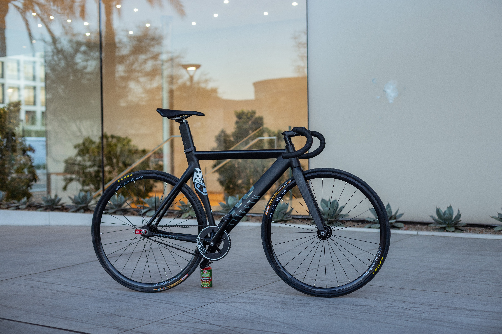
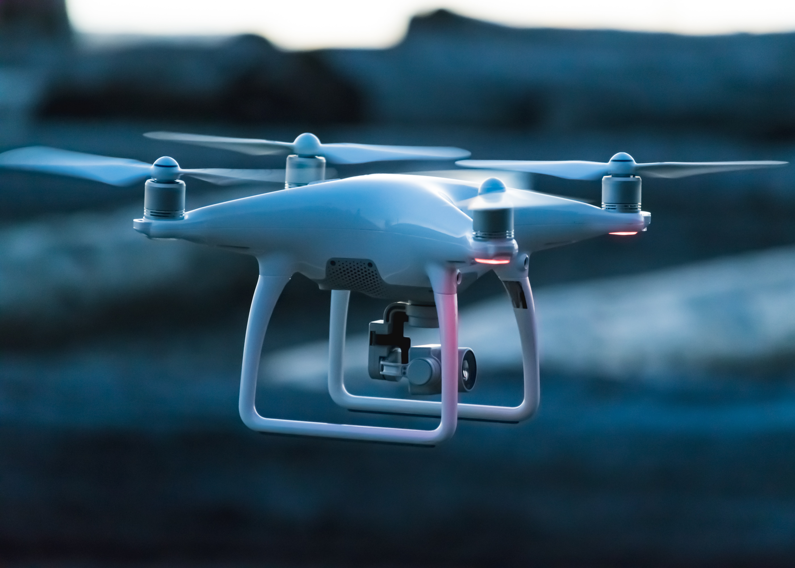
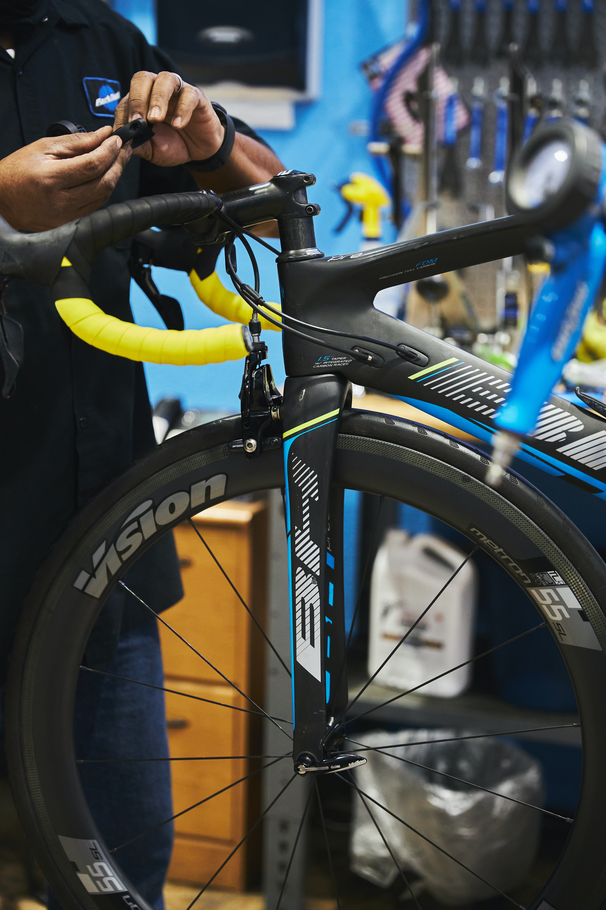

제가 무엇을 좋아했고 지금은 어떤 분야에 관심이 있는지에 대해 이야기를 해볼까 합니다. 또, 미래에 어떻게 살아갈지에 대해서도 직접 게획해본 것에 대해서도 간단히 이야기를 해보겠습니다.
초등학교 6학년때 학교 도서관에서 도서부로 활동을 하며 자연스레 책과 친해지게 되었습니다. 처음 접하게 된 책은 타이거 수사대라는 추리 소설이었고 정말 재미있게 읽어서 전 시리즈를 모두 읽어봤습니다. 또한 중학교때로 와서 마찬가지로 도서부로 활동하면서 책에 대한 관심을 이어갔고 이 때는 더 헬퍼라는 시리즈를 모두 사서 다 읽어 볼 정도로 재미있었고 고등학교에 와서 사서 선생님의 추천으로 읽어 본 김동식 작가님의 책을 접하게 되었고 제 취향에 맞아서 작가님의 초청강연도 들어가며 작가님의 모든 시리즈를 한 편씩 소장해가며 읽고 있습니다.

아주 어렸을때, 아마도 유치원때? 그 때부터 레고에 대한 애정이 정말 넘쳐나서 고1때 까지도 레고를 수집해 왔고 정말 많이 구매했기에 그 가격도 어마무시 했습니다. 지금까지는 거의 정리하고 일부분만 남아서 아쉬움이 있지만 지금까지 성장해 오면서 저의 소소한 행복를 주었기에 레고를 하길 잘했다는 생각이 듭니다.

자전거는 중학교 1학년 때 친구들이 타는 것을 보고 혼자 독학을 통해 타기 시작했습니다.ㅎㅎ 자랑거리는 아니지만 스스로가 무언가를 해냈다는 것을 알려주기 시작한 존재였죠. 처음에는 20만원 정도의 유사 산악자전거로 시작했습니다. 다음해에 70만원도 되는 픽시 자전거를 구매하여 중고 소형차 한 대 값 정도를 자전거를 커스텀하는데 사용했더니 인생의 쓴 맛을 느끼기 시작하였죠, 그러다가 고2 8월쯤 잠시 자전거에 대한 고민과 동시에 학업을 위해 그만 두었습니다.
드론은 진로에 대한 관심사 입니다. 사실 저는 고1때 일식요리사로 진로를 거의 확정해 갈 때 쯤 담임선생님과의 상담 때 "요리는 할 게 없을 때 하는거야"라는 저에겐 충격적이지만 현실적인 조언을 듣고 잠시동안 멘탈이 흥들렸습니다. 그러다가 기계공학 분야에 관심이 많던 저에게 고2때 선생님이 드론을 추천을 해주셨고 이에대해 이 후 부터 많은 애정을 갖고 대학과 관련학과를 바라보며 준비를 시작 했습니다. 여러 발표나 활동을 통해서 드론에대해 준비 하다보니 정말 드론이 많은 분야에서 사용 되는구나를 깨닫게 되었고 저 뿐만 아니라 한국의 미래를 위해 드론을 발전 시키고 활용 할지에 대해 초당대에 진학을 하여 항공드론과에서 연구를 하려고 합니다.
성곡적으로 드론학과에서 졸업을 하고 군부대에서 드론교관으로 직업을 갖게 된다면 좋겠지만 그렇지 못하다면 세상에서 나만의 자전거를 가질 수 있도록 하는 자전거 커스텀 전문샵을 운영하는 것이 마지막 찬스이자 마지막 목표 입니다.
 <